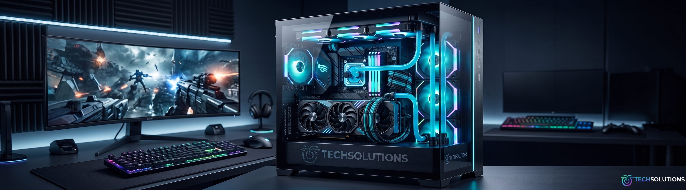
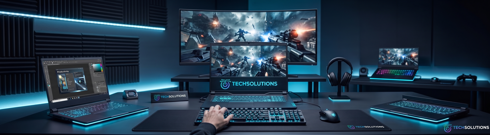
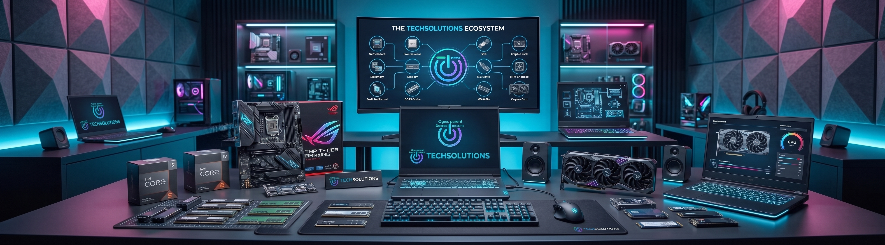

Computadoras
Un espacio dedicado a los equipos de escritorio. Encontrarás configuraciones optimizadas para todo tipo de usuarios: desde PC hogareñas y de oficina para tareas cotidianas y estudio, hasta potentes estaciones de trabajo (workstations) para diseño gráfico, edición de video y las mejores computadoras gaming armadas con componentes de última generación

Notebooks
La sección ideal si buscas movilidad sin comprometer el rendimiento. Explora nuestra selección de computadoras portátiles ultraligeras para ejecutivos y estudiantes, equipos corporativos de alta durabilidad y notebooks gamer equipadas con tarjetas gráficas dedicadas para jugar donde quieras.

Componentes
Diseñada para los entusiastas del armado y la actualización de hardware (hardware upgrade). Disponemos de un amplio stock de procesadores (CPU), tarjetas de video (GPU), placas madre, memorias RAM de alta velocidad, unidades de almacenamiento SSD NVMe, fuentes de alimentación certificadas y sistemas de refrigeración líquida o por aire.
